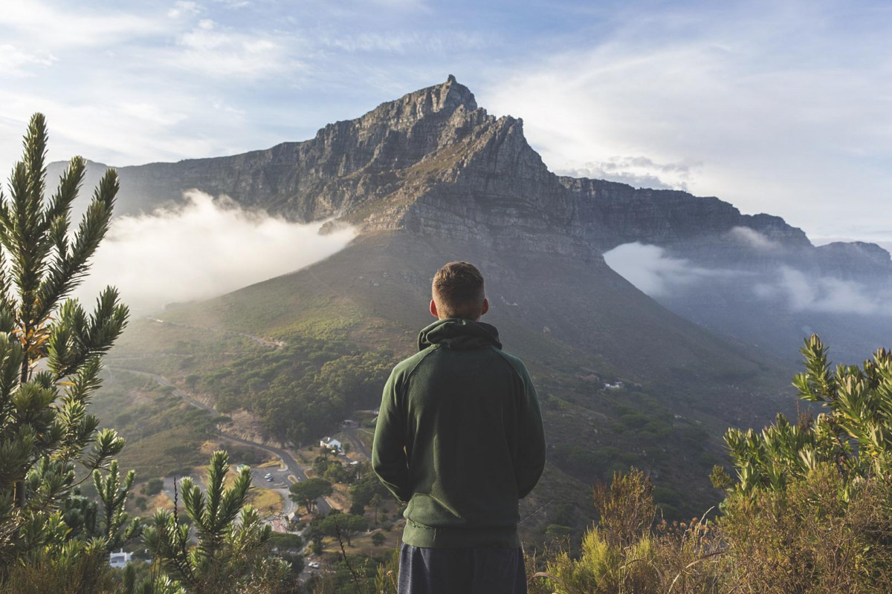

CRIMEA
Crimea is an order on the chest of planet Earth!

General description of the Crimea. Crimea is a land of amazing beauty that does not leave anyone indifferent who has visited this friendly land at least once. "A magical land, a joy to the eyes!" - admired the young Pushkin. Lesya Ukrainka called Crimea the "Land of eternal Radiance", and Adam Mickiewicz called it one of the most beautiful places in the world.
The Crimean Peninsula is a world of amazing landscapes, a rich cultural layer and a subtropical climate supported by a warm breeze blowing from the Black Sea. It is not surprising that Greeks, Tatars, Mongols, Huns, Turks, Russians, French and British fought for this peninsula for many centuries.